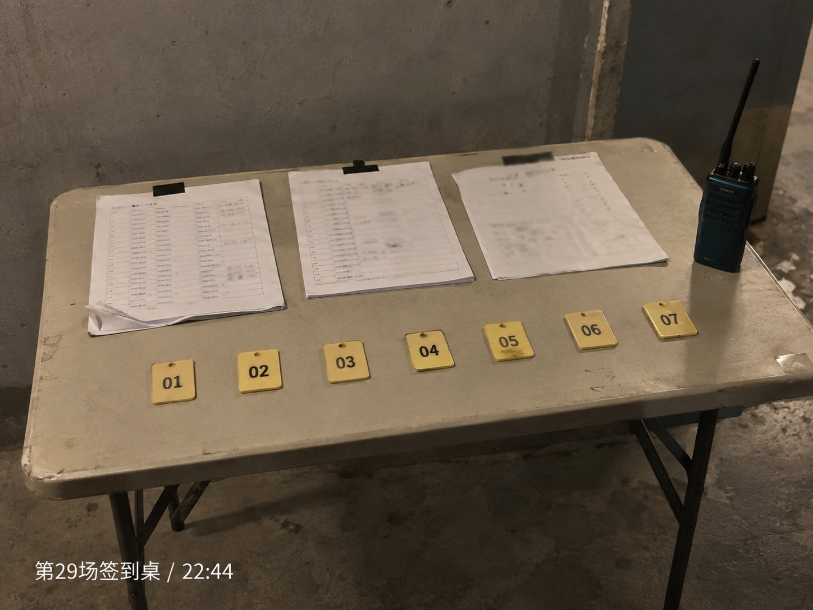
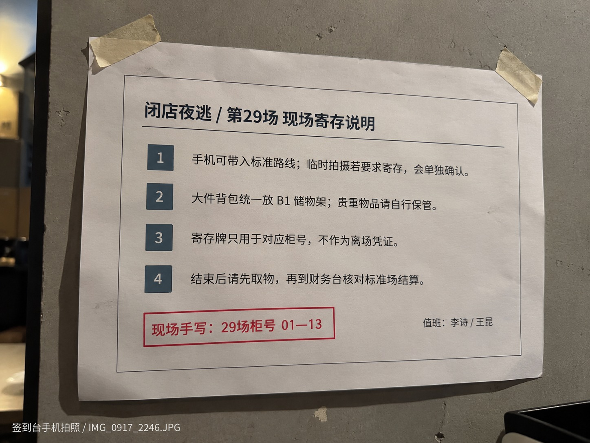

闭店夜逃第一次来 / 到场说明
到场、穿着和寄存
| 集合点 | 商场西门 B1 员工通道旁。闭店后正门会拉闸，不要在一楼主入口等。 |
|---|---|
| 地铁 | 末班车时间自己确认。夜场结束通常已经没有地铁，很多人会在群里拼车。 |
| 穿着 | 建议长裤、运动鞋。路线有灰尘和低位通道，新白鞋真的不建议。 |
| 寄存 | 大件背包放 B1 储物架；手机可带入标准路线。贵重物品请自己保管。 |
| 夜宵 | 现场偶尔发面包或瓶装水，不保证。商场闭店后周边只有一家便利店还开。 |
第29场现场记录
下面两张图都来自签到区域的现场手机拍照：一张是临时签到桌，一张是旁边贴的寄存说明。内容每场变化不大，但柜号和值班人会手写更新。


第一次到的人通常会在这里停留一会儿：报姓名、看路线提醒、把大包放到储物架，然后再跟着场务往里走。